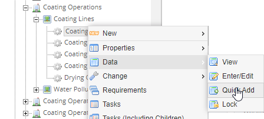
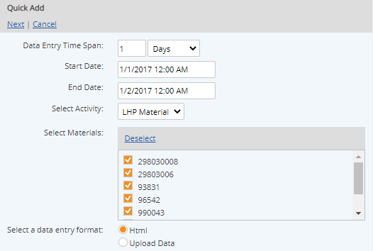
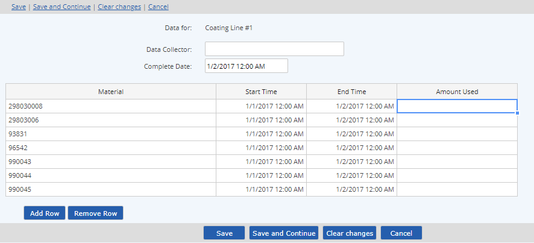

Quick Add for Material Activity data simplifies the data entry process for multiple data lines.
To enter MAC data using Quick Add:
From the system model, select the parent object for the data entry. Right click the object and choose Data > Quick Add.

If there are parameters stored at the same location, select Material/Activity and click Next.
The Quick Add page is displayed with the following options:

Data Entry Time Span: Select the time period and the interval to apply. The System will remember the last period used and present that as the default.
Start Date: Start Date to apply by default to the material data lines. The Start Date defaults to the previous start date (from last data entry) plus the period.
End Date: End date to apply by default to the material data lines. The end date defaults to the Start Date plus the interval and period specified.
For Monthly, Yearly and Quarterly intervals, the end date defaults to the first day of the next period. This is to allow for data entry for material data lines (MDLs) through the last day of the period, since the end dates for MDLs cannot not be later than the complete date. However, if you need the data to be stored on the last day of the period for downstream calcs and reporting, you can change the end date to the last day of the period.
Select Activity: If more than one Activity is available, select the correct Activity.
Select Materials: The materials associated with the Material Activity Requirements at this location are shown. Check the material(s) to use. One material data line will be created for each selected material.
To enter data manually, leave the data entry format at the default HTML selection. Then click Next.
The data entry screen grid displays a row for each selected material.
The Complete Date defaults to the same date as the End Date. The Complete Date may be edited but must be no earlier than the End Dates of the data lines.
The default Start Date and End Date is applied to each row. You may edit the date/time field to apply a specific range to each material.

To enter data select a cell and type the value manually. You may also copy and paste from a spreadsheet.
To add additional data lines, select Add Row.
To delete a row, select Remove Row. (Rows with no data will be ignored.)
To clear all data, select Clear Changes.
To enter data for the next consecutive period, click Save and Continue. Another table will be presented with dates for the next period. Be sure to check the Completion Date and other dates and edit if necessary.
When you are done, select Save.
You can check the status of a command immediately by clicking View Commands. Completed transactions have the status Succeeded. Transactions still in process may be Processing or Waiting. Failed commands should be reported to your administrator. Data from a failed transaction is not saved and will need to be resubmitted once the problem is resolved.